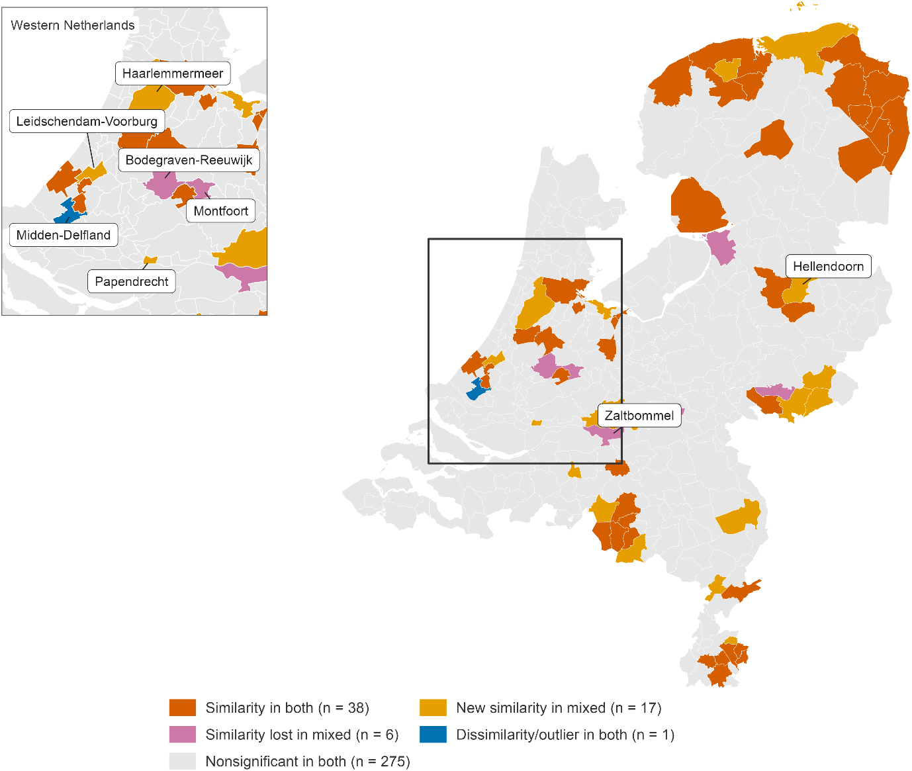

ML-SAS: A Machine-Learning-Based Spatial Autocorrelation Statistic for Mixed-Type Data
Woohyung Kim and Sang-Il Lee
Geographical Analysis, 2026
We used machine learning to measure similarity between regions with a mix of numerical and categorical attributes, then used those similarities to measure spatial autocorrelation.